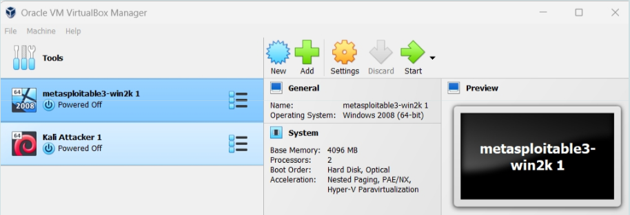
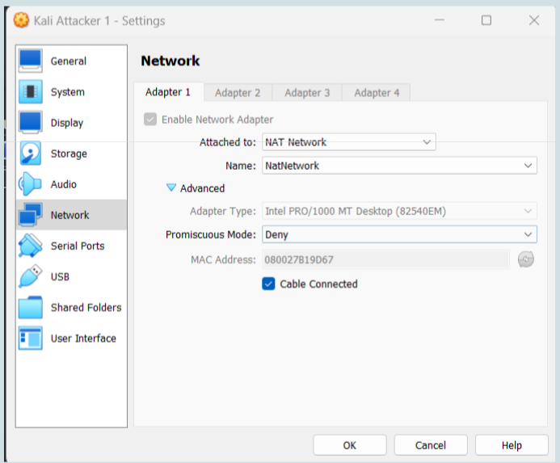
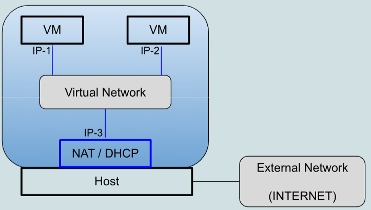
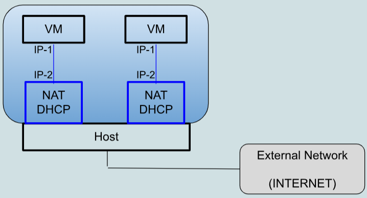

Metasploitable3 Hacking Lab - Installation
A short but very useful guide to installing everything you need on Windows can be found in section Windows setup in a nutshell.
Attacked machine (Metasploitable3)
Metasploitable3 is a freely available virtual machine (VM) that contains a number of security vulnerabilities and has been designed for learning purposes. It comes in two flavors: Linux Ubuntu and Windows Server 2008.
This document assumes metasploitable3 Windows Server 2008, running on VirtualBox. In order to follow the exercises suggested in this document, there is no need to obtain the Linux Ubuntu version.
In order to create a metasploitable3 VM, one can either download a prebuilt image already configured for VirtualBox or construct one. Instructions can be found in this Github repository and .
Downloading a prebuilt image configured for VirtualBox is simpler and quicker (“quick start” in the Github repo); however, in this case the Windows Server VM will warn that the 30 days evaluation period has elapsed and the Windows copy is not genuine.
Attacking machine
This document assumes that the attacker uses Kali Linux. All the suggested attack tools are already installed in Kali.
Kali can be used in one of these ways:
- Native operating system. This is the less hardware-demanding option. In this case the network configuration for the metasploitable3 VM is more complex (see below).
- VM in VirtualBox. This is the scenario used as a reference in this document. Many websites describe how to install a Kali VM on VirtualBox (see also section Useful links below).
- VM in WSL2 (Windows subsystem for Linux). This is similar to 2 except that some of the suggested attack tools (e.g., metasploit, hashcat) will have to be installed separately, because the Kali distribution available for WSL2 is a minimal distribution.
Parrot OS is an alternative to Kali. It is a Linux distribution very similar to Kali that requires less memory and less secondary storage.
VirtualBox configuration
My suggested configuration is as follows:
- VirtualBox
- Metasploitable3 Windows VM as attacked machine.
- Kali (or Parrot OS) VM as attacker machine.
Both VMs should be configured as “NAT network” and part of the same network. With this network configuration the VMs (guests) will be able to communicate between themselves. Their servers will not be reachable from the PC running VirtualBox (host) nor from the external network. The VMs will be able to access the host and the external network as clients.
Special cases:
- A better network configuration for the VMs would be “internal network” with both VMs connected to the same (internal) network. In this way, the VMs would be fully isolated from the host and from the external network. Configuring the metasploitable3 VM for this network configuration is more difficult, though, because the scripts available in the Github repository configure the VM for the “NAT network” case and would have to be modified (which is not straightforward).
- If the attacker machine is not a VM running on VirtualBox (that is, options 1 or 3 above) the VirtualBox network configuration for metasploitable3 should enable “port forwarding”, to make their services visible to the attacker (i.e., to make the servers on the guest o.s. reachable from the host o.s.). There are many ports that will have to be enabled. To find the corresponding list, search for “metasploitable3 enumeration” or a similar term.
Useful links
- VirtualBox network configuration manual.
- Guides and tutorials on VirtualBox network configuration: one and two.
- Lab - Virtual Machines on this website about VirtualBox and VirtualBox networking.
- Installing Kali Linux on a VM on VirtualBox.
- WSL2 (Windows Linux Subsystem): best practice and Kali Metapackages.
VirtualBox in a nutshell
Virtual Machines
A virtual machine (VM) is a computer emulated in software. This computer has a filesystem, RAM memory, keyboard, network interfaces and so on. All these resources are emulated in software by a dedicated program called hypervisor. The hypervisor runs on a (real) computer. VirtualBox, discussed in more detail below, is a freely available hypervisor that can run on Windows, Linux, MacOS.
A VM runs an operating system, like any other computer. Creation, bootstrap and shutdown of a VM is done through the hypervisor.
For example, you could run VirtualBox on Windows and then have a Linux VM running on that VirtualBox. You could have many VMs defined in VirtualBox and run them at different times. You may also run several VMs simultaneously, the performance being obviously limited by the hardware resources of the machine that runs the hypervisor.
Before creating a VM you need a file in ISO format containing the installation image of an operating system. This file must be stored on the machine where the hypervisor runs. The first time you launch the VM you install the operating system on that VM from this image.
While a VM is running, its screen will be shown in a window of the machine where the hypervisor runs. Upon a bootstrap, all the permanent state of the VM (files, configurations) will be the same as it was upon the last shutdown.
The filesystem of a VM, as well as any secondary storage required by its operating system, is stored on the filesystem of the machine that runs the hypervisor, in a (large) file managed by the hypervisor itself.
Resources of VMs are fully isolated from each other, like real machines. For example, a malware on a VM may encrypt the entire filesystem of that VM; it cannot operate on files of other VMs or on files of the machine that runs the hypervisor. The technical details for ensuring this isolation, implemented through the hypervisor, are very complex.
Each VM is called guest; the physical machine that runs the hypervisor is called host.

VirtualBox. Two VMs defined, both not running.

Two VMs running on a Windows PC. Kali VM on the left (desktop shows a shell window and a Wireshark window), Metasploitable3 Windows Server 2008 on the right (desktop shows a shell window and a file explorer window).
Networks in VirtualBox
In VirtualBox each VM can have up to 4 network interfaces. Usually, each interface has a private IP address, dynamically allocated by a DHCP server implemented by VirtualBox.
The VMs defined in a given VirtualBox installation can be organized in many different networking architectures, by associating each network interface with one of the available networking modes. This operation is done through the “Network settings” of the VM. Networking modes in VirtualBox are quite complex, we provide here only the background necessary for the Hacking Lab.
By default, a VM uses one network interface in “NAT mode” (this configuration is described at the end of this section).
The default configuration is not suggested for the Hacking Lab. The suggested configuration is:
- network interface of each VM in “NAT network mode”;
- one "NAT network" defined in VirtualBox (VirtualBox requires each such network to have a name; I have used "NATNetwork" in the screenshot below);
- both VMs connected to that network (see next image).

Network settings of the Kali VM. Those of the metasploitable3 VM are identical.
With this configuration,
- Each VM has client access to the host and to the external network, through a NAT module implemented by VirtualBox.
- VMs can communicate between themselves.

NAT network (two VMs connected to the same network).
With the default network configuration (not suggested), each VM is in "NAT mode". In this way VMs cannot communicate between themselves. Furthermore:
- All VMs are given the same IP address and the respective default gateways all have the same IP address.
- Server access to a VM is possible only by enabling port forwarding in the NAT module of VirtualBox. Port forwarding defines whether a given port number is managed by the host or by one of the VMs. Port forwarding is defined in the network settings of each VM rather than globally. If a given port number is forwarded to multiple VMs then malfunctioning will occur (usually the traffic will reach only the VM that starts first).

NAT mode (default).
Windows setup in a nutshell
(Courtesy of Mauro Farina)
Metasploitable3
- Download and install Vagrant: https://developer.hashicorp.com/vagrant/docs/installation
- 260 MB download
-
Once installed:
# Windows mkdir metasploitable3-workspace cd metasploitable3-workspace Invoke-WebRequest -Uri "https://raw.githubusercontent.com/rapid7/metasploitable3/master/Vagrantfile" -OutFile "Vagrantfile" # Linux mkdir metasploitable3-workspace cd metasploitable3-workspace curl -O https://raw.githubusercontent.com/rapid7/metasploitable3/master/Vagrantfile -
To create the Metasploitable Windows Server VM, run
-
Once that’s done, you should see a metasploitable3 VM within Oracle VM VirtualBox
- Windows Server VM username/pwd: vagrant/vagrant
Kali Linux
- Download Kali Linux VM image https://www.kali.org/get-kali/#kali-virtual-machines
- 3 GB download
- Extract files
- might take a couple of minutes
- Move folder to
C:/users/YOUR_NAME/VirtualBox VMs - From Oracle VM VirtualBox: Add → kali-linux-folder → file .vbox
- Kali Linux VM user/pwd: kali/kali
VM VirtualBox - Create NAT Network
- File → Tools → Network Manager
- NAT Networks
- Create